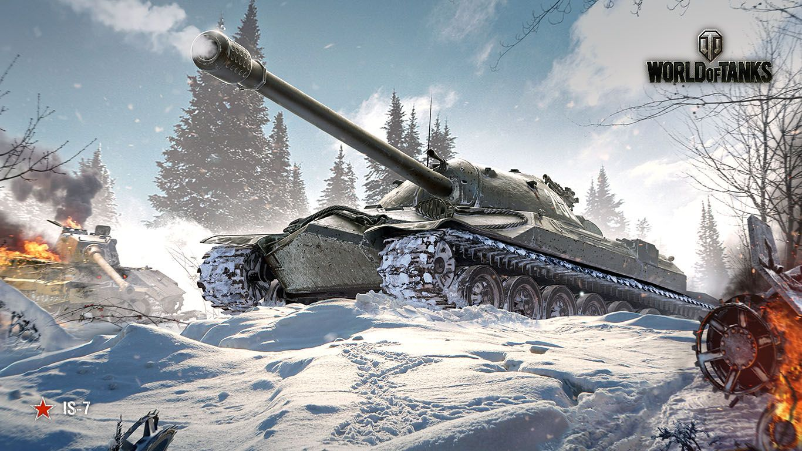
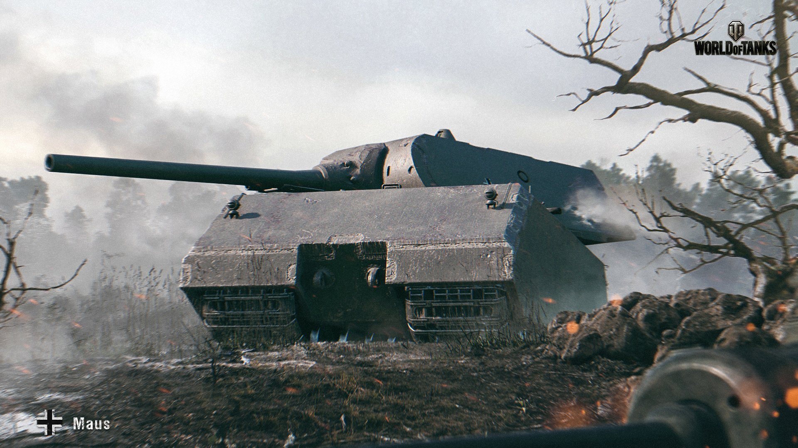
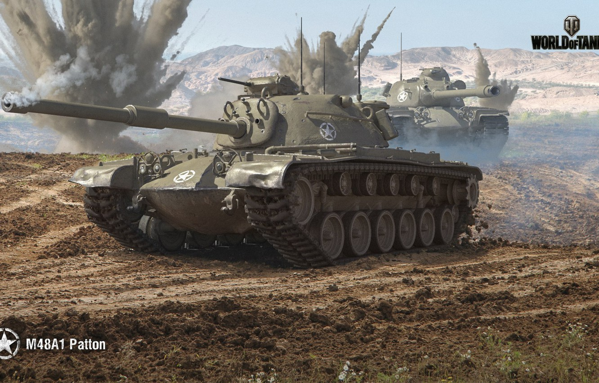
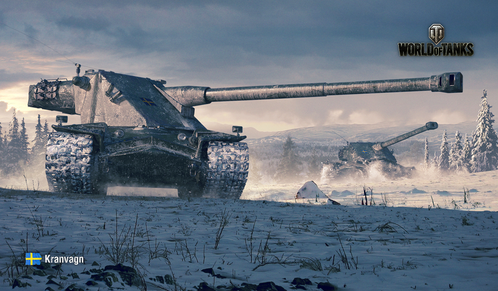
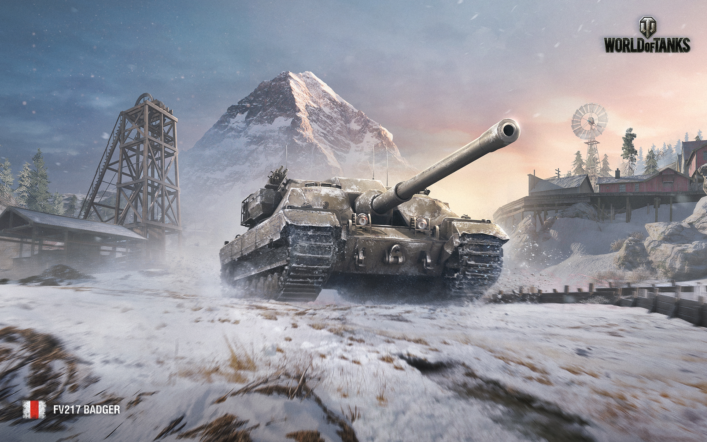

IS-7
The IS-7 is a Soviet tier 10 heavy tank.
Development of the IS-7 started in the spring of 1945. Prototypes successfully underwent trials in 1946 and 1947. However, the IS-7 never saw mass production.
With its well angled "pike-nose" frontal armor layout and a rounded, highly sloped turret front, the IS-7 is one of the toughest nuts to crack when engaged from the front. If positioned behind a piece of cover which shields its lower glacis plate, it becomes a hardened object with so few weak points that successfully damaging the tank turns into a most frustrating experience. Therein lies a weakness, however - the IS-7 cannot angle its armor, because if it does, the sloping of the frontal plate will become significantly worsened and enable most guns to punch through with relative ease.

Maus
The Maus is a German tier 10 heavy tank.
Developed from June 1942 through July 1944, with two prototypes produced, only one of which received a turret and armament.
The biggest and heaviest tank in World of Tanks Blitz, the Maus is certainly a mammoth tank and with the most hit points in the game (2500), it should never be fought alone, unless you are in a tank such as the T62. Boasting some of the thickest armor in the game, if your tanks gun lacks penetration above 225, fighting this tank will not go well. Lack of sloping anywhere on the tank except the frontal armor can allow tanks with adequate penetration to get through your side and rear armor with ease.

M48A1 Patton
he M48A1 Patton is another example of a jack-of-all-trades-master-of-none tank like its predecessors. It possesses a smooth, egg-shaped hull and a curved turret with decent frontal thickness. Its armor is stronger than most mediums of its tiers and will deflect a surprising amount of shots from its peers if hull down. The 105mm M68 is an extremely versatile weapon, with high penetration, damage, and rate-of-fire. While it is a clear improvement in firepower over the M46 Patton.
It is also slightly slower than its predecessor, due to its heavier weight and weaker engine. In addition, the M48A1 is also a very large tank, even larger than the T110E5 heavy tank. However, it compensates for that with its reasonable amount of maneuverability and great traverse, at 50 degrees per second. Furthermore, the gun depression is still satisfactory at 9 degrees, though not as effective as the M46 Patton due to its middle turret placement.

Kranvagn
The Kranvagn is a Swedish tier 10 heavy tank.
A project for a new vehicle for the Swedish army that started in 1949. For confidentiality purposes, the vehicle was given an unusual name, KRV, which stands for self-propelled crane (in Swedish). The project was based on the French AMX 50. A lightweight chassis was built and tested; in addition, a dummy with a turret was produced. A prototype was never built.
The final advancement of the Swedish turreted tank line. Shared with its predecessors; thanks to the size, weight and power to weight ratio, it's considered by many to be more of a medium tank rather than a heavy tank.

FV217 Badger
The FV217 Badger is a British tier 10 tank destroyer.
A project for a tank destroyer based on the Conqueror chassis was developed in the late 1940s. Existed only in blueprints.
Replaced the FV215b (183) at the tier 10 position in the British Turretless Tank Destroyer line. The FV217 Badger shocks anyone who faces it (or reads its paper stats) with its listed insane frontal armor of 355mm. However, the 355mm of armor only exists around the gun, and the rest of its frontal armor is only around 210mm in thickness (and around 270mm at view spots). This may give the wrong impression though since the 210mm part of its armor is decently sloped (Similar to StuG III) which adds about another 90mm of armor resulting in 300mm+ on its upper frontal plate. It wields a nasty 123mm gun which provides the highest DPM in the game. Fighting this vehicle frontally is not advised.